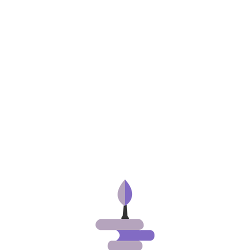
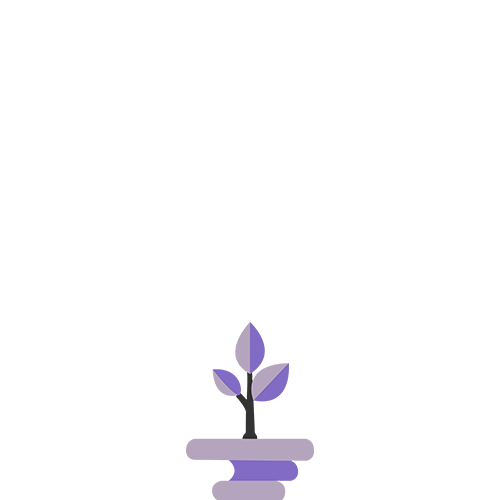
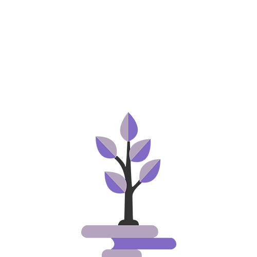
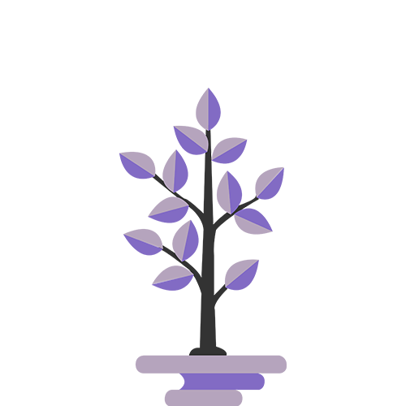

For us, listening to you is the most important step. We want to be certain that we understand your key requirements, what victory feels like and the parts of the project where there’s room for us to be creative.
Think

Before we jump into designing anything, we’ll take a step back and try to envision the wider context of your project. We call this the “research & reflect” phase. We will review the landscape of your business or idea to see what others have achieved. This ensures our implementation is creative and original.
Design

This is an iterative process with you where we give user empathy the utmost importance in order to achieve an intuitive experience. There’s many steps in this process including doing user research and creating personas, mapping flows and information architecture. This will lead us to wireframes and prototypes that we’ll test with target users to ensure that all the requirements have been met.
Build

For us, listening to you is the most important step. We want to be certain that we understand your key requirements, what victory feels like and the parts of the project where there’s room for us to be creative.
Test

For us, listening to you is the most important step. We want to be certain that we understand your key requirements, what victory feels like and the parts of the project where there’s room for us to be creative.